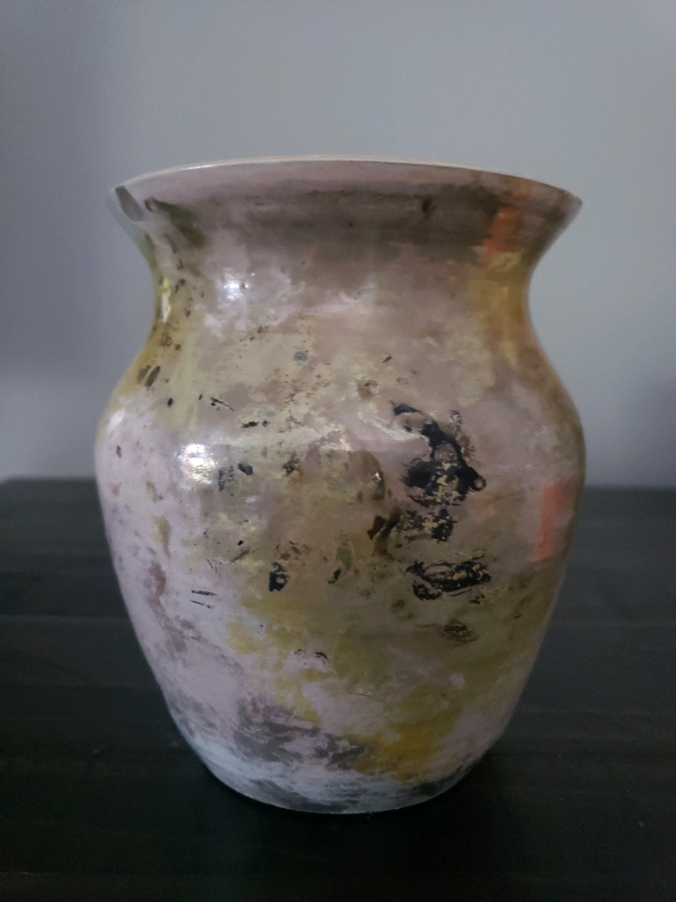

My Raku Projects


These are my two favorite pieces that I have made. Each fired in the kiln, but they both have very drastically different designs. The vase on the left has a gradient of many colors including: gold, silver, copper, pink, blue, and beige. The bowl on the left has a antique japanese jade look that is very visually appealing. The solid black slices throughout bring contrast that takes the piece that extra mile. I was very lucky for both of these pieces to come out very well.